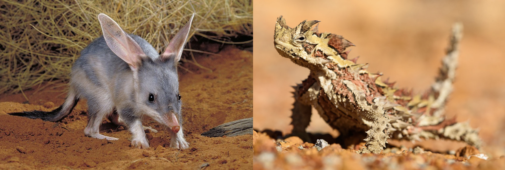

Vertebrate Adaptations to Local and Desert Ecosystems
Term 1, Week 4, Lesson 2
Do Now
Look at the image below of the Australian outback at midday in summer.

In your book, list THREE challenges that a small mammal would face trying to survive here during a summer’s day.
You have 3 minutes.
Daily Review
Answer the following 5 multiple choice questions in your book:
- A plant that releases seeds from its follicles only after being exposed to intense heat is described as:
- Deciduous
- Serotinous
- Epiphytic
- Xerophytic
- A lignotuber is classified as which type of adaptation?
- Behavioural
- Physiological
- Structural
- Ecological
- Grass trees (Xanthorrhoea) can resprout rapidly after bushfire because they have:
- Serotinous cones
- Thick, fire-resistant bark
- Very deep tap roots
- Lignotubers at the base of their stems
- In which type of WA plant would you most commonly find epicormic buds?
- Mangroves
- Desert succulents
- Eucalypts
- Rainforest ferns
- Which of the following correctly classifies the fire-adaptive trait?
- Thick bark — physiological
- Serotinous follicles — behavioural
- Lignotuber — structural
- Epicormic buds — behavioural
Learning Intentions
Today we are learning about how vertebrates in south-west WA and Australian desert ecosystems display structural, behavioural and physiological adaptations that help them survive in hot, dry conditions.
Success Criteria
You will be successful if you have:
Keywords
- Nocturnal
- Active at night and resting during the day. A behavioural adaptation to avoid the intense heat of the day, which reduces the risk of overheating and dehydration.
- Pinnae
- The external, visible portions of the ears. In desert animals such as the bilby, enlarged pinnae provide a greatly increased surface area for radiating excess body heat.
- Torpor
- A state of reduced metabolic activity and body temperature in which an animal conserves energy and water during periods of extreme heat, cold or food scarcity. Different from hibernation, which lasts months; torpor can last hours or days.
- Diurnal temperature variation
- The difference in temperature between the hottest part of the day and the coolest part of the night. In the Australian desert, this can exceed 30°C — a variation that animals exploit through behavioural adaptations.
Learning Activities
Activity 1 — I DO: How Vertebrates Survive in Hot, Dry Environments
The Challenges
Vertebrates living in hot, arid ecosystems face three main challenges:
| Challenge | Consequence |
|---|---|
| High temperatures | Risk of overheating and protein denaturation |
| Water scarcity | Risk of dehydration; water must be conserved |
| Food scarcity | Energy must be used efficiently |
Key Vertebrate Adaptations
1. Nocturnal Behaviour — Bilby (Macrotis lagotis)

The greater bilby is found across the Kimberley and arid regions of WA. It is entirely nocturnal:
- Spends the day in a deep spiral burrow (up to 2 m deep) where temperatures remain much cooler than the surface.
- Emerges at night to forage when temperatures can be 20–30°C lower than midday.
- Reduces water loss through respiration by avoiding the hottest, driest part of the day.
Type of adaptation: Behavioural (nocturnal activity) + Structural (adapted for burrowing — strong forelimbs, wedge-shaped snout)
2. Large Pinnae (Ears) — Bilby

The bilby’s distinctive large ears serve a thermoregulation function:
- The thin skin of the ears contains a dense network of blood vessels close to the surface.
- Warm blood from the body core flows through these vessels, and heat radiates out into the cooler night air.
- This lowers the animal’s core body temperature without needing to use water (unlike sweating or panting).
Type of adaptation: Structural
3. Concentrated Urine Production

Many arid-zone vertebrates have kidneys that are adapted to reabsorb water very efficiently:
- The loop of Henle in the kidney nephron is longer in desert-adapted mammals, creating a steeper osmotic gradient.
- This allows more water to be reabsorbed from urine before it is excreted, producing very concentrated urine.
- The animal loses less water through excretion, conserving body fluids.
WA examples: bilby, red kangaroo (Osphranter rufus), spinifex hopping mouse (Notomys alexis).
Type of adaptation: Physiological
4. Pale / Sandy Colouration — Thorny Devil (Moloch horridus)

The thorny devil is found across the arid and semi-arid regions of WA. Its pale, sand-coloured scales:
- Provide camouflage against the red-orange sandy desert substrate, reducing predation risk.
- Lighter colours also reflect more solar radiation, reducing heat gain from sunlight.
- Its spiky body surface also collects dew overnight, channelling moisture to its mouth via capillary action — a remarkable physiological adaptation.
Type of adaptation: Structural (colouration and body spines)
5. Burrowing — Marsupial Mole (Notoryctes typhlops)

The marsupial mole spends almost its entire life underground:
- Powerful, spade-like forelimbs and a hardened nose cone for pushing through sand.
- No functional eyes (vestigial) — no need for vision underground.
- Underground temperatures are significantly cooler and more stable than the surface.
Type of adaptation: Structural (body form) + Behavioural (underground lifestyle)
Summary Table
| Adaptation | Type | Animal | How It Helps |
|---|---|---|---|
| Nocturnal behaviour | Behavioural | Bilby | Avoids peak heat; reduces water loss |
| Large pinnae | Structural | Bilby | Radiates excess body heat |
| Concentrated urine | Physiological | Bilby, kangaroo, hopping mouse | Conserves water |
| Sandy/pale colouration | Structural | Thorny devil | Camouflage + reflects solar radiation |
| Burrowing | Structural + Behavioural | Marsupial mole, bilby | Escapes heat; stable temperature underground |
Check for Understanding
True or False: Write T or F for each statement.
| Statement | T / F |
|---|---|
| Nocturnal behaviour is a physiological adaptation. | |
| The bilby’s large ears help it radiate body heat. | |
| A longer loop of Henle in the kidney helps conserve water. | |
| The thorny devil’s colouration is a behavioural adaptation. | |
| Burrowing is an example of a structural adaptation. |
Answers: F, T, T, F, F (burrowing is behavioural; the body structure enabling it is structural)
Activity 2 — WE DO: Comparing Two WA Desert Vertebrates
As a class, we will compare the adaptations of the bilby and the thorny devil.

Guided Comparison Table
For each animal, identify one structural, one behavioural and one physiological adaptation:
| Adaptation | Bilby | Thorny Devil |
|---|---|---|
| Structural | ||
| Behavioural | ||
| Physiological | ||
| Ecosystem challenge addressed |
Discussion Questions
- Both animals live in the same desert ecosystem but are very different in body size. How does body size affect the challenge of thermoregulation?
- The thorny devil collects dew through its skin and body spines. Is this a structural, behavioural or physiological adaptation? Justify your answer.
- Could the bilby survive in the south-west WA jarrah forest? What adaptations would or would not be useful there?
Activity 3 — YOU DO: Vertebrate Adaptations to Local and Desert Ecosystems
Complete the worksheet: 142-vertebrate-adaptations-local-desert-you-do.docx
You will match vertebrate adaptations to their function, classify them, and write a short explanation for a chosen WA desert species.
Work independently. You have 10 minutes.
Notes
Use this space to write any important points from today’s lesson.
Reflection
- Being active at night to avoid heat is classified as:
- Structural
- Physiological
- Behavioural
- Ecological
- The bilby’s large ears help it survive in the desert by:
- Improving its hearing to detect predators
- Radiating excess body heat
- Collecting morning dew
- Shading its eyes from the sun
- Producing very concentrated urine in desert mammals is which type of adaptation?
- Structural
- Behavioural
- Physiological
- Physical
- Which WA animal uses both deep burrowing and nocturnal behaviour to avoid heat?
- Red kangaroo
- Thorny devil
- Wedge-tailed eagle
- Bilby
- Short answer: Explain why burrowing is an effective adaptation for a desert mammal on a day when the surface soil temperature reaches 65°C. Mention what is happening to the temperature underground.
Home-study
Choose a WA vertebrate animal not mentioned in today’s lesson that lives in a hot, dry environment. Identify and describe one of its adaptations and classify it as structural, behavioural or physiological. Write 3–4 sentences.